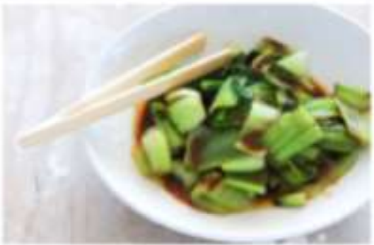

Bok choi
Japanese Vegetarian
Learn to cook authentic Japanese cuisine
Join Yoko's Kitchen and learn to cook authentic Japanese cuisine with our experienced chefs. Our classes are designed for all skill levels, from beginners to advanced cooks.